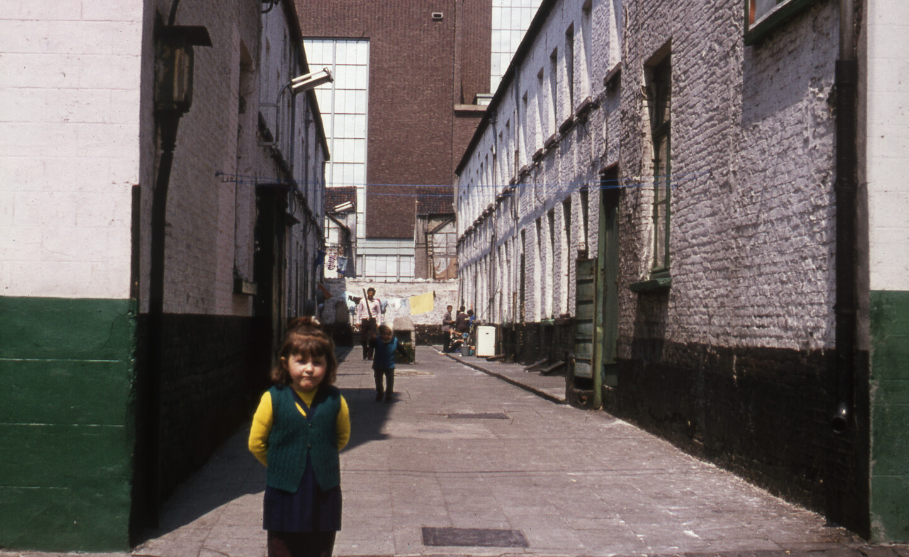
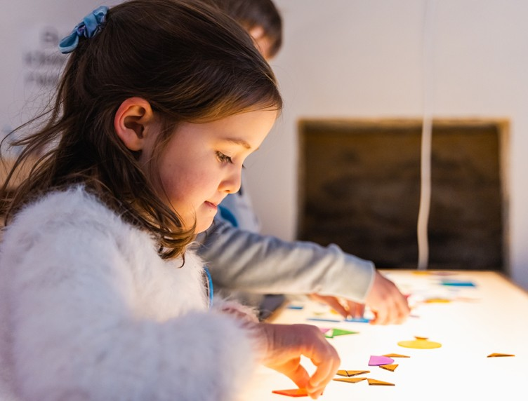
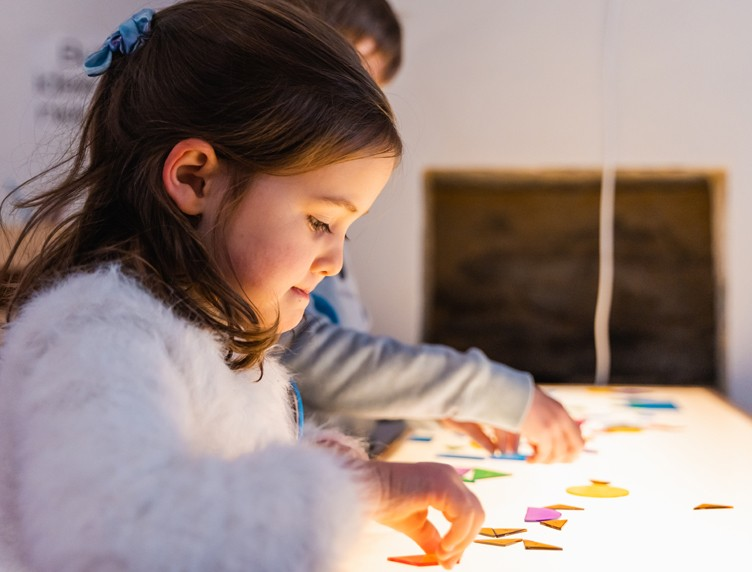
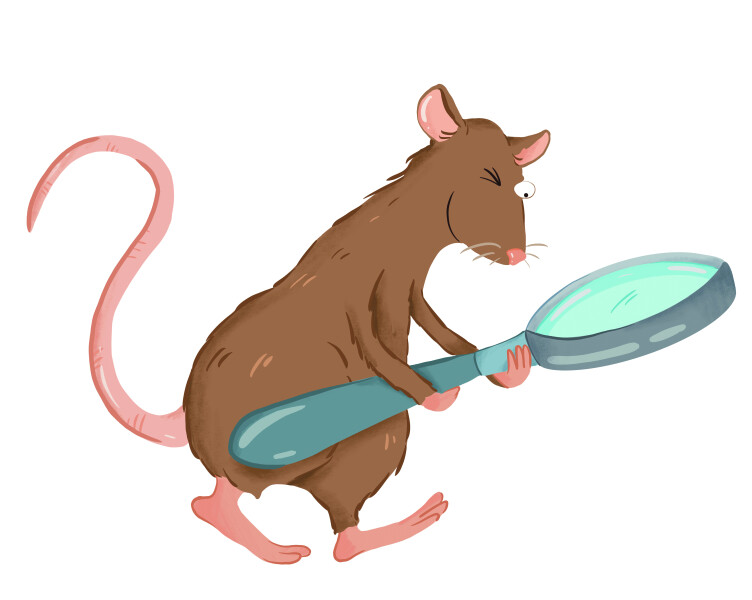
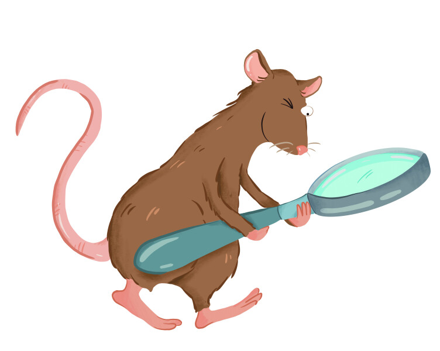

permanent
Kom naar het STAM en ontdek 'Het verhaal van Gent', de vaste tentoonstelling. Loop over de gigantische luchtfoto, zie en voel de stad groeien en veranderen van vorm, ontdek unieke objecten, ga op in digitale animaties en verdwaal in muurbrede kaarten.

29.11.2024
31.08.2025
Eeuwenlang kwam je de stad binnen via gigantische poorten. Vandaag vind je precies op die plaatsen dynamische en kleurrijke stadswijken. Wat gebeurde hier de afgelopen twee eeuwen? Hoe werd de stad hier gevormd en hertekend? De meest besproken delen van de stad nemen in deze expo zelf het woord. Op 't randje van de stad, maar centraal in deze expo.

Leer 'Het verhaal van Gent' kennen vanuit het perspectief van spijs en drank. Want niks brengt ons dichter bij de Gentenaren die hier ooit leefden, werkten, aten en dronken. En dat op Late Donderdag in november!

Kom op Kunstendag voor Kinderen dit jaar langs in het STAM en ga de creatieve toer op in onze STAMstudio. Tijdens de workshop 'Mijn straf stuk' voor kinderen tussen 9 en 12 jaar tank je inspiratie in het museum en steek je de handen uit de mouwen.
 

permanent
Doe je ‘Het verhaal van Gent’, dan kom je ook een gezellig familieatelier tegen vol met bouwelementen. Wat als ... jij de stad mag vormgeven? Hoe zou die er dan uitzien? Aan de slag!
 

permanent
Ontdek alle bochtjes en gaatjes van 'Het verhaal van Gent' met het luisterspel 'Santé m'n Ratje'. Luister en speel samen met Ratje in het STAM, ideaal voor kinderen van 4 t.e.m. 9 jaar.

permanent
Doe je ‘Het verhaal van Gent’, dan kom je ook een gezellig familieatelier tegen vol met bouwelementen. Wat als ... jij de stad mag vormgeven? Hoe zou die er dan uitzien? Aan de slag!
21.04.2024
30.12.2024
Zestig jaar geleden kwam de Turkse migratie naar Gent op gang. Vandaag heeft bijna een tiende van de Gentenaren Turkse roots. Jongeren uit de Turkse diaspora gingen op zoek naar de verhalen, voorwerpen en betekenissen achter die cijfers. 'Wie bewaart, die vindt! Koru ve yașat!', een sneak peek van een groeiende Gents-Turkse erfgoedcollectie.
03.05.2024
09.03.2025
Het STAMplein is een gratis stukje museum met een wisselende programmatie. Ontdek er de schatten van de vijfde aflevering van het erfgoedproject 'De vierkante kilometer' waarbij Dampoort uitgelicht wordt.